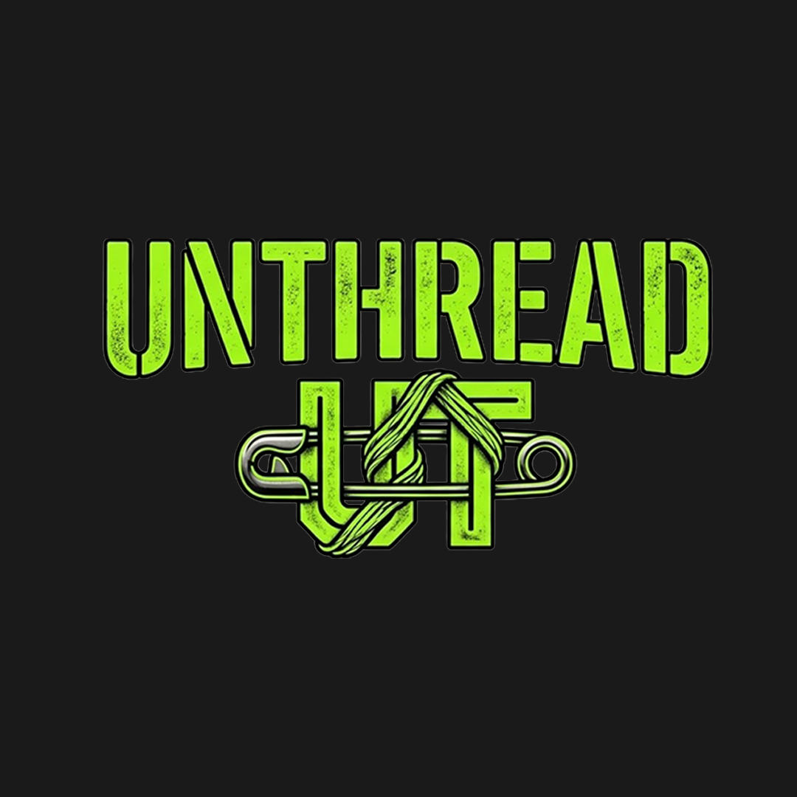

Project Overview
UNTHREAD is a typography and graphic design activity created for CEEL 301 Graphics Design. The composition focuses on expressive lettering, texture, and visual identity.
Design Concept
The design uses bold neon-green lettering with a distressed appearance against a dark background. A thread-inspired graphic element adds character to the overall composition.
Design Elements
- Bold display typography
- Distressed lettering texture
- Neon-green color treatment
- Thread-inspired graphic element
- Dark background and visual contrast
What I Learned
This activity helped me explore how typography, texture, and graphic elements can communicate a visual concept and create a distinctive design.
Final Design
Original UNTHREAD typography and logo composition.
